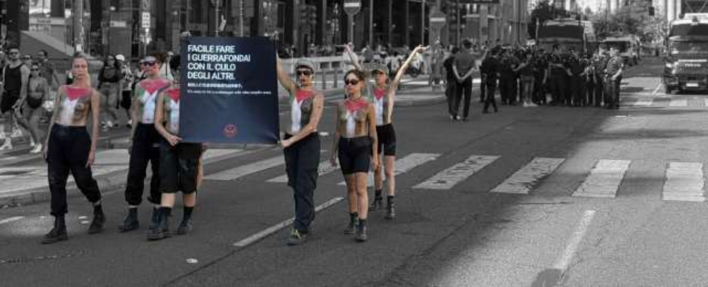
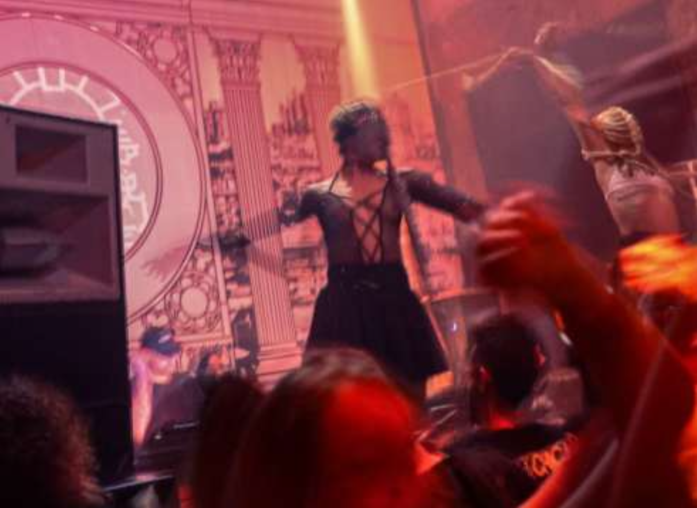
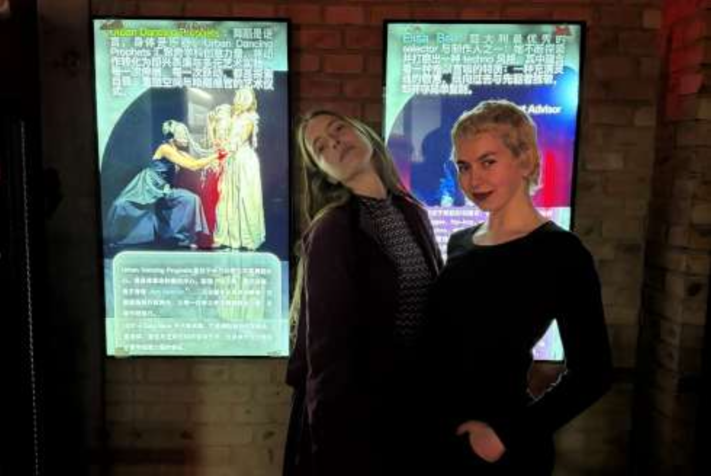
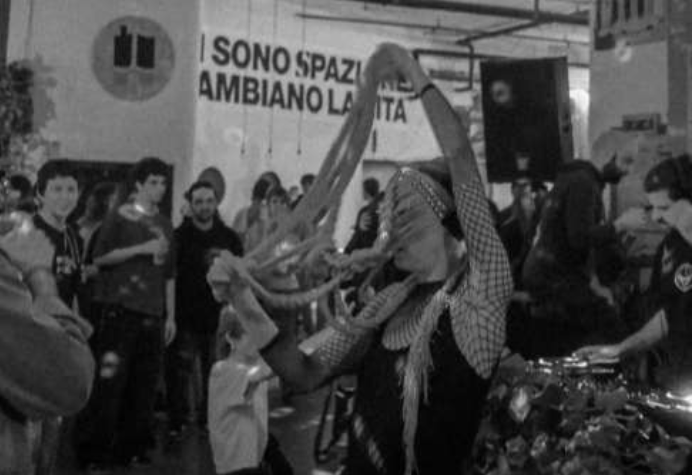
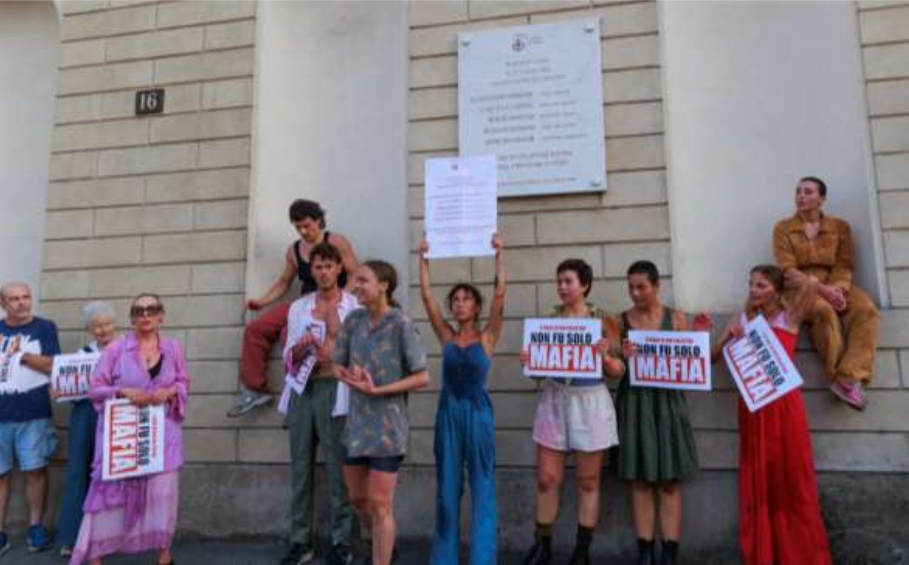
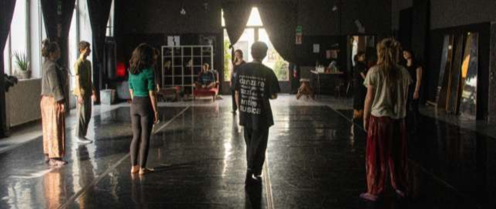

Для многих людей танец — это зрелище. Для Urban Dancing Prophets — это политический язык.
Urban Dancing Prophets родился внутри Sala Nera, пространства, посвящённого перформативным искусствам в Tempio del Futuro Perduto в Милане, и представляет собой резидентный коллектив танцовщиц и перформеров, использующих тело как инструмент художественного исследования, социальной трансформации и создания сообщества.
Их перформансы проходят в клубах, театрах, музеях, на площадях, на публичных манифестациях и в заброшенных пространствах, постоянно перемещаясь между современным танцем, ритуальностью, импровизацией и электронной культурой.
Но что на самом деле значит говорить о «политическом танце»? И какая связь существует между движением тела, техно-музыкой и активизмом?
Мы поговорили об этом с Urban Dancing Prophets.

1. Почему вы называете свой танец «политическим»?
Отправная точка для нас в том, что тело обладает универсальным языком. И именно поэтому оно способно обращаться ко всем.
Сегодня, когда мир пылает и раздирает народы, сбивает с толку и ослабляет людей, заниматься политикой крайне необходимо, но политику часто понимают как область знания, которой могут заниматься лишь немногие интеллектуалы. Для нас же важно подчеркнуть, что в эту необходимость должны быть включены все, буквально все.
Мы говорим с народом. Мы танцуем для народа и вместе с народом. В этом и есть разница. Тело — это инструмент, которым обладает каждый и который каждый способен почувствовать и истолковать, а значит, оно по-настоящему доступно. Наш танец политичен именно потому, что исходит из этой предпосылки.
Мы убеждены, что танцем можно произвести перемены. Мы убеждены в этом ещё и потому, что видим, как это происходит. Каждый раз, когда мы танцуем, что-то случается. Всегда находится кто-то, кто говорит нам, что увидел или почувствовал нечто, что, возможно, уже жило внутри него, но ещё не нашло способа проявиться. Именно на этом и работает танец. Он заставляет тебя слушать, оставлять пространство, брать на себя ответственность за то, что ты чувствуешь, а значит — и за других. Для нас это уже и есть политика.
«Тело — это инструмент, которым обладает каждый и который каждый способен почувствовать и истолковать, а значит, оно по-настоящему доступно. Наш танец политичен именно потому, что исходит из этой предпосылки.»
2. Как соотносятся тело и политика?
Что ж, если политика касается того, как мы выбираем жить вместе, то тело — это то место, где этот выбор становится по-настоящему конкретным. Если подумать о классовой борьбе, о борьбе за интерсекциональные права, о мигрантах, о войне, о доступе к заботе и здоровью, мы всегда говорим о телах: кто может, а кто не может свободно передвигаться, населять пространство, любить, отдыхать или жить без страха.
Любая форма власти проходит через тело. Она дисциплинирует его, защищает, эксплуатирует, заставляет замолчать или позволяет ему выразить себя.
И вот, когда сообщество вновь начинает чувствовать собственное тело, оно вновь начинает задаваться вопросом о том, как оно хочет населять мир, и какую ответственность несёт перед другими.

3. Ваши «Ночные ритуалы» стали одним из самых характерных для вас опытов и привели вас к выступлениям в самых разных международных контекстах. Что это такое?
Ночные ритуалы — это гибридные перформансы на стыке современного танца и техно-музыки. Они родились из желания привнести современный танец в клубы: места, где танцуют все, но где редко задерживаются, чтобы понаблюдать за языком тела. Благодаря сильной импровизационной составляющей мы вступаем в диалог с танцполом. Иногда со сцены, из-за звука, иногда прямо в толпе людей, никогда не прерывая праздник, но позволяя энергии продолжать циркулировать между перформерами и публикой.
Каждый Ночной ритуал оживает через фигуры, вдохновлённые киберпанк-образностью, что позволяет нам каждый раз затрагивать разные темы. Мы работаем с телом, присутствием и отношениями, которые складываются именно в этот момент, делая каждый перформанс непохожим на предыдущие: он меняется вместе с музыкой, пространством и сообществом, которое его проживает.
То, что мы пытаемся создать, — это коллективный катарсический опыт, в котором граница между тем, кто смотрит, и тем, кто танцует, растворяется. Именно в этот момент клуб снова становится для нас местом встречи, выражения и трансформации.
В последние годы Ночные ритуалы привели нас к выступлениям в самых разных международных контекстах, вплоть до двух туров по Китаю. Было удивительно обнаружить, что, даже когда меняются язык и культура, этот диалог между телом, музыкой и танцполом способен создавать мгновенную связь повсюду.

4. Почему вы выбрали именно техно-культуру полем для своих исследований?
Техно — одна из немногих современных культур, которая продолжает политически ставить тело в центр. В эпоху, когда всё фрагментировано, ускорено и поверхностно, техно возвращает нам возможность часами оставаться внутри общего опыта, в котором сотни людей дышат, двигаются и слушают друг друга вместе. Это форма культурного сопротивления.
Нас особенно интересует её ритуальное измерение: повторение, ритм и большая длительность позволяют выстраивать доверие, постепенно входить в состояние присутствия, которое в повседневной жизни мы почти забыли.
Некоторые из нас, кроме того, происходят из рейв-культуры. Культуры, о которой часто рассказывают лишь через её крайности, но которая на самом деле сумела породить удивительный опыт самоорганизации, взаимопомощи, свободы и временного сосуществования. В этом культурном наследии мы нашли гораздо больше, чем эстетику: мы нашли политическую практику и способ выражения коллективного «я».
«Техно — одна из немногих современных культур, которая продолжает политически ставить тело в центр.»
5. Так что же такое современный ритуал?
Сегодня, на наш взгляд, ритуалы — это необходимые практики для того, чтобы приучать сообщества к осознанности и памяти: кто мы, что мы разделяем и какие ценности выбираем хранить. Ритуалы всегда сопровождали человеческие общества, со временем мы утратили привычку и обычай их совершать, но мы считаем, что они по-прежнему выполняют фундаментальную функцию. Многие из общих ритуалов, которые когда-то задавали ритм коллективной жизни, ослабли и не всегда были заменены опытами, способными создать то же чувство принадлежности. Поэтому мы пытаемся создавать новые. Перформанс на площади, коллективный танец, рейв, светская процессия, флешмоб, практика слушания — всё это может стать современными ритуалами, если им удаётся преобразить, пусть даже всего на несколько часов, то, как сообщество проживает само себя в отношениях с Другим и с пространством.

6. Как рождается ваш перформанс? Из политической идеи, из образа или из движения?
Наши перформансы почти всегда рождаются из вопроса, который мы ощущаем как неотложный. Каждая работа начинается с того, что мы спрашиваем себя, какую трансформацию хотели бы произвести в людях и в пространстве. Оттуда открывается исследование: постепенно приходят движение, музыка, драматургия и образы, но мы никогда не знаем точно, что произойдёт. Эта открытость — часть работы.
Хореографическая структура — это то, как этот вопрос обретает тело. И мы делаем это почти всегда через импровизацию: пространство свободы и взаимного слушания, в котором каждый танцовщик и каждая танцовщица может привнести что-то своё. Так каждый перформанс становится по-настоящему неповторимым и уникальным.
7. Мы живём в эпоху, где господствуют экраны. Что это значит для вас?
Экраны дали нам невероятные возможности, но также приучили нас переживать мир почти исключительно через взгляд. Тело же способно узнавать гораздо больше вещей: вес, ритм, расстояние, контакт, дыхание, усталость, равновесие, доверие.
Вернуть тело в центр — значит вспомнить, что мы прежде всего реляционные существа, а уже потом — пользователи, потребители или зрители. Значит вернуть человеческому опыту сложность и красоту.
8. Ваши перформансы часто происходят в публичном пространстве. Почему вы выходите из театра?
Перформанс — это инструмент, с помощью которого сообщество может по-иному вообразить самого себя: то есть может стать своего рода социальной инфраструктурой. Например, каждый раз, когда мы танцуем вместе на улице, мы экспериментируем с альтернативной формой сосуществования. На несколько минут мы приостанавливаем привычные правила пространства, времени и отношений: небольшое упражнение в возможном будущем, которое именно поэтому уже становится реальным.
Кроме того, публичное пространство принадлежит гражданам, но слишком часто мы проживаем его лишь как место транзита. Наши перформансы пытаются вернуть ему иную функцию: функцию места встречи, воображения и отношений. Театр — драгоценное пространство, но тот, кто в него входит, уже решил участвовать. Публичное же пространство принадлежит и тем, кто не ожидает встретить искусство.
9. Многие ваши работы затрагивают социальные и гражданские темы. Какова роль искусства перед лицом конфликтов настоящего?
Искусство, на наш взгляд, не должно объяснять людям, что думать, а должно создавать условия для того, чтобы они снова могли чувствовать и критически развивать собственную мысль.
Мы постоянно пронизаны информацией, образами, мнениями и рискуем стать постоянными зрителями боли мира. Искусство обладает силой прервать это оцепенение.
Танец не хочет заменить политику, потому что именно на неё возложена трудная задача преобразования институтов и материальных условий. Но он может подготовить почву, меняя то, как люди воспринимают мир, смотрят на него и населяют его. Когда мы создаём политический перформанс, мы не хотим ограничиваться заявлением позиции, но также и прежде всего хотим создать опыт, который делает невозможным остаться равнодушным и который остаётся с людьми даже после того, как перформанс закончился.
Для нас искусство также призвано вернуть красоту в глаза людей — не для того, чтобы сделать настоящее более выносимым, а чтобы напомнить нам, что возможен иной способ жить и воображать мир.

10. Ваша работа часто говорит о сообществе. Как сообщество строится через движение?
Это наш самый большой вызов, и он всё ещё остаётся открытым. Мы верим, что сообщество рождается не тогда, когда люди думают одинаково, а тогда, когда они вместе проживают по-настоящему значимый опыт. Когда два человека танцуют вместе, например, им приходится постоянно слушать друг друга. Им приходится оставлять пространство для другого, приспосабливаться, доверять, брать на себя взаимную ответственность. Это упражнение, которое, незаметно для нас самих, также учит жить вместе.
В Tempio мы используем танец, электронную музыку и перформанс, чтобы заботиться об общем публичном пространстве, об отношениях и о коллективном воображении. Но этого недостаточно: прежде всего, в самом деле, фундаментальное значение имеет измерение труда и делания — мы монтируем, демонтируем, убираем, готовим, ждём, радуемся и страдаем вместе. Движение постоянно, и требует немало усилий и труда — как индивидуального, так и коллективного.
